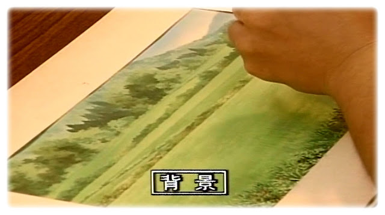

Animation Process at Studio Ghibli
Idea Development
The animation process at Studio Ghibli begins with the development of ideas. This involves brainstorming and conceptualizing the storyline, characters, and themes for the film.
Script Writing
Once the ideas are finalized, the scriptwriting phase begins. A detailed script is created, outlining the entire story, including scenes, dialogue, and character interactions.
Storyboarding
After the script is completed, a storyboard is created. This serves as a visual representation of the script, illustrating key frames and basic movements of the film.
Character Design
Following the storyboard, characters and their costumes are designed. The way characters dress is used to reveal their personality, place in society, and the time period the film is set in.
The beginning:
Similar to other films, every creation from Studio Ghibli originates from an initial idea. This concept is subsequently crafted into a script that delineates the entire narrative, encompassing scenes and dialogue, thereby ensuring alignment among all team members.
Following this, it is essential to develop the characters and their attire. The clothing choices of characters serve as a means to unveil their personality traits, social standing, and the specific era depicted in the film.
Once the characters are designed, the next step involves creating a storyboard. This serves as a visual roadmap for the entire film, outlining key scenes and transitions.
With the storyboard as a guide, animators begin sketching out each scene frame by frame. This meticulous process forms the foundation for the animation sequence.

Simultaneously, intricate backgrounds are crafted to complement the characters and enhance the visual appeal of each scene.

Once all elements are prepared, each frame is shot individually, capturing the essence of the animation.
Subsequently, voices are recorded to synchronize with the animation, ensuring seamless dialogue delivery.
The final stage involves meticulous editing and matching up the animation with the recorded voices to achieve synchronization.
Upon completion, the film is developed and prepared for distribution to the audience.

Additionally, the film's soundtrack and theme music are recorded to enhance the overall viewing experience.
Finally, the film undergoes a staff screening to ensure quality standards are met before its official release.

DONE! The film is now prepared for distribution to the broader audience, eagerly anticipating the unveiling of the newest Ghibli masterpiece, much like you and me.